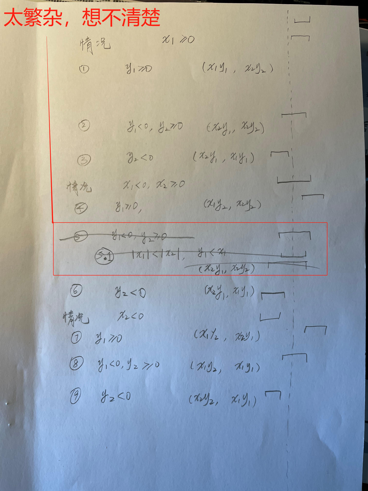

2.11
练习 2.11 在看了这些东西之后，Ben 又说出了下面这段有些神秘的话：“通过监测区间的端点，有可能将 mul-interval 分解为9种情况，每种情况中所需的乘法都不超过两次。”请根据 Ben 的建议重写这个过程。
(define (make-interval a b) (cons a b))
(define upper-bound cdr)
(define lower-bound car)
(define (add-interval x y)
(make-interval (+ (lower-bound x) (lower-bound y))
(+ (upper-bound x) (upper-bound y))))
(define (sub-interval x y) (add-interval x (make-interval (- 0 (upper-bound y)) (- 0 (lower-bound y)))))
(define (subtract-interval x y)
(define p1 (- (lower-bound x) (lower-bound y)))
(define p2 (- (lower-bound x) (upper-bound y)))
(define p3 (- (upper-bound x) (lower-bound y)))
(define p4 (- (upper-bound x) (upper-bound y)))
(make-interval (min p1 p2 p3 p4) (max p1 p2 p3 p4)))
(define (mul-interval x y)
(define p1 (* (lower-bound x) (lower-bound y)))
(define p2 (* (lower-bound x) (upper-bound y)))
(define p3 (* (upper-bound x) (lower-bound y)))
(define p4 (* (upper-bound x) (upper-bound y)))
(make-interval (min p1 p2 p3 p4) (max p1 p2 p3 p4))
)
(define int1 (make-interval 2 4))
(define int2 (make-interval 3 6))
(mul-interval int1 int2)
通过观察以上实现，发现结果区间是由4个端点的最小值和最大值组合而成，但是使用了4次乘法。要分成9种情况来讨论，很自然地是按照区间在0右边、左边和横跨0点来分类：
x 在0点右边
- y 在0点右边，显然，最小值 = ，最大值 =
- y 在0点左边，显然，最小值 = ，最大值 =
- y 横跨 0 点，显然，最小值 = ，最大值 =
x 在0点左边
- y 在0点右边，显然，最小值 = ，最大值 =
- y 在0点左边，显然，最小值 = ，最大值 =
- y 横跨 0 点，显然，最小值 = ，最大值 =
x 横跨0点
- y 在0点右边，显然，最小值 = ，最大值 =
- y 在0点左边，显然，最小值 = ，最大值 =
- y 横跨 0 点，这个想了很久，发现情况特别繁杂，远远超出了对整个情况分成 9 种情况的类别，原因是想避免使用 min、max。最终放弃，还是无脑计算后，使用 min max 来得简单，但导致合起来这个分支还是有 4 次乘法，似乎没有满足题目要求。 由于x和y都横跨0点，所以最小值肯定不大于0，因为要么是 ，要么是，看谁更小。同理，最大值肯定不小于0，要么是 ，要么是 ，看谁更大。
(define (multiply-interval x y)
(define x1 (lower-bound x))
(define x2 (upper-bound x))
(define y1 (lower-bound y))
(define y2 (upper-bound y))
(cond
((>= x1 0)
(cond
((>= y1 0) (make-interval (* x1 y1) (* x2 y2)))
((<= y2 0) (make-interval (* x2 y1) (* x1 y1)))
(else (make-interval (* x2 y1) (* x2 y2)))
)
)
((<= x2 0)
(cond
((>= y1 0) (make-interval (* x1 y2) (* x2 y1)))
((<= y2 0) (make-interval (* x2 y2) (* x1 y1)))
(else (make-interval (* x1 y2) (* x1 y1)))
)
)
(else
(cond
((>= y1 0) (make-interval (* x1 y2) (* x2 y2)))
((<= y2 0) (make-interval (* x2 y1) (* x1 y1)))
(else (make-interval (min (* x1 y2) (* x2 y1)) (max (* x1 y1) (* x2 y2))))
)
)
)
)
(multiply-interval int1 int2)
